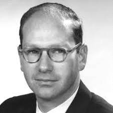

Støydemping Teknologien
Innhold i nettsiden:
- Hva er støydemping - Historie - Hvordan funker støydemping - Brukervennlighet, utviklingsmuligheter og miljøpåvrikning - Etiske problemstillinger knyttet til teknologisk utvikling - KilderHva er støydemping?
Støydemping er teknologien brukt for å redusere lyden rundt seg. Man kan redusere lyden når man sitter i bilen, i flyet, eller når man er i en bråkete byggeplass. Teknologien blir brukt for å beskytte hørselen og for å være konvertabel i stillhet. I dag ser man det mye i hodetelefoner og ørepropper. Teknologien blir brukt for daglig liv, yrker og et verktøy som for eksempel:
- Bygningsarbeidere: Bruk av maskiner og verktøy som lager mye lyd kan være skadelig for ørene, så bruk av støydempende hodetelefoner vil da motvirke de høye lydene og redusere hørselskade.
- Mekanikere: Mekanikere som Flymekaniker som jobber med maskinene inne i flyet kan bli utsatt for høye lyder. Derfor hjelper støyreduserende hodetelefoner for å minske skader.
- Pasienter i MR-maskin: Når en MR-maskin er skrudd på så lager det enorme høye lyder, i vertfall for pasienten som er inni. Støydempende hodetelefoner vil da minke disse lydene for pasienten slik at det ikke er like mye ubehag under prosessen.
Det finnes to typer støydemping, passiv støydemping og aktiv støydemping. Passiv støydemping går ut på at bakgrunns lyden blir blokkert ut ved hjelp av design og materiale. Det kan for eksempel være ørepropper som bruker en type skum-tupper som isolerer lyd ut bedre enn for eksempel silikon-tupper. Aktiv støydemping går ut på at mer teknologisk der det er rettet mot mikrofoner og høyttalere. Da handler det mer om lydbølger og hvordan bølger påvirker hverandre (Bang & Olufsen, u.å.).
Historie
Støydemping ble først oppfunnet av Paul Lueg i Tyskland 1933. Han var en filosof og en doktor for medisin. Han var den første til å sende ut et design for Støydemping. Uheldigvis så var det ikke bra nokk utstyr og teknologi for å teste det ut, men designet var sett som teoretiskest mulig (Bazoyan, 2019). Patent søknaden til Lueg ble til slutt akseptert 9. Juni, 1936.
Til venstre så kan du se det offisielle patentet Paul Lueg lå ut 8. Mars, 1934 og ble akseptert 9. Juni 1936.
Den første figuren illustrerer en pipe der en lyd fra en retning blir sendt ut. Denne lyden blir forsterket på grunn av pipen. Pipen er gitt navnet T og en mikrofon med navnet M er festet til pipen. Mikrofonen er plassert mellom kilden til lyden og en høyttaler med navnet L. Da vil mikrofonen få lyden s1 fra en side, og lyden s2 fra høyttaleren som er den omvende bølgen for s1.
Den omvende lyd bølgen skal bli produsert ved å justere posisjonen til mikrofonen i forhold til høyttaleren slik at det vil endre lyden sendt ut fra høyttaleren. I teorien så skal dette få bølgene av lyd til å kansellere hverandre ut og fjerne bakgrunns lyden.
Figur 2 er et til design hvor det er en åpen plass. En lyd kilde som er kalt for A sender ut lydbølger i alle retninger, men 2 stykker er illustrert. De er kalt for a1 og a2 der bølgen a1 er rettet mot mikrofonen, og bølgen a2 er rettet mot høyttaleren. Mikrofonen og høyttaleren er koplet sammen med en forsterker imellom. Her skal a1 lyden bli reversert slik at høyttaleren sender ut den motsatte bølgen. Dette kan bli gjort ved å kanskje flippe polene til høyttaleren, men metoden for dette var ikke vist i patentet.
Lawrence Jerome Fogel var den neste til å ta over rundt 1950 tallet. Det er rundt 20 år senere etter Paul Lueg publiserte sin patent. Fogel sendte ut sin patent 2. April, 1954. Den ble til slutt akseptert 27. Desember 1960 (Fogel, 1960). Etter over 20 år så har teknologien i verden blitt mye bedre, noe som da ga mulgheten til å forsette Paul Lueg sine ideer.
Lawrence Jerome Fogel var en oppfinner og var født 2. Mars 1928 i New York og døde når han ble 78år i 2007. Han var dyktig i ulike linjer som elektronikk, luftfartsteknologi og programmering («Lawrence J. Fogel», 2023). Det er rundt 20 år senere etter Paul Lueg publiserte sin patent. Han er sett som den første personen til å oppfinne støydemping fordi han kom fram med de første funkende støydempende hodetelefonene (Bazoyan, 2019).
Dette er et bilde av Lawrence Jerome Fogel sin første funkende støydemping hodetelefon. Synet til Fogel med disse hodetelefonene var for å skaffe støydemping til innenfor linjen luftfart. Det vil si innenfor fly, helikoptre eller andre luftfartøy. Han ville at systemet skulle redusere de høye lydene for pilotene slik at kommunikasjon blir lettere (Bazoyan, 2019; Pascua, 2022).
AFRL står for «Air Force Research Laboratory» og de drev å forsket på hørselvern, og både aktiv og passiv støydemping i samme tidsperiode der Fogel forsket på støydemping. I tillegg hadde AFRL et eget prosjekt mellom 1956 og 1957 som her ANR, det sto for «Active Noise Reduction». Siden både Fogel og AFRL jobbet med det samme i samme periode så er det en sjanse for at teknologiene har påvirket eller inspirert hverandre, men i utgangspunktet så jobbet de ikke sammen (Bazoyan, 2019).
I 1978 fikk Dr. Amar Bose ideen om å lage hodetelefoner som reduserte lyden rundt seg. Dette er fordi når han var i flyet så var musikken han hørte på alltid forstyrret av lydene fra flyet (Bazoyan, 2019; Insider Tech, 2019). Dr. Amar Bose er grunnleggeren av selskapet BOSE startet deretter å forske på å lage de første prototypene til å funke. I 1986, rundt 10 år senere etter han fikk ideen klarte de å lage de første funkende prototypene. Litt senere i tid så ble teknologien brukt for ulike ting. Det var først brukt for piloter og for militæret, men etter hvert gitt til first-class passasjerer. Det ble deretter solgt til vanlig folk på butikken når prisene til teknologien gikk ned (Insider Tech, 2019). Etter dette ble flere selskaper som "Sennheiser" også interessert i støydempende hodetelefoner (Bazoyan, 2019).
Finn ut mer om BOSE og legg til noe bilde
Hvordan funker støydemping
Passiv støydemping:
Passiv støydemping handler om hvordan man kan minke støy som kommer inn når man har på hodetelefoner ved hjelp av materialene som blir brukt til hodetelefonene. De materialene som funker best er de som har høy tetthet og har gode lydisolerende egenskaper, som skumgummi, skinn, skumm, silikon og gummi.
Skumgummi er et veldig mykt materiale som blir brukt både for hodetelefoner og ørepropper. De funker bra fordi de har lydisolerende egenskaper og absorberer mye av lyden.
Skinn funker også bra på grunn av de lydisolerende egenskapene. De er også lettere å rengjøre og holder lenger uten om å bli ødelagt av slitasje.
Silikon og gummi blir brukt mest for ørepropper. Grunnen til hvorfor de funker bra for støydemping er fordi de er myke, har støydempende egenskaper og former og tilpasser seg selv i ørekanalen slik at det er tett der inne og mindre lyd kommer inn (Bang & Olufsen, u.å.).
Aktiv støydemping:
Aktiv støydemping går mer ut på den teknologiske og elektroniske siden av støydemping. Støydempingen fungerer ved hjelp av mikrofoner og ved med forstålsenen av hvordan lydbølger fungerer.

Lyd bølger er bygget opp av topp- og bunn-punkter, og svingninger. De har også ulike bølgelengder, har ulik frekvens, og amplitude (Brandt et al., 2020, ss. 192–193).
Disse lydbølgene fra omgivelsene blir tatt opp av mikrofonene til hodetelefonene. Deretter blir lyden sendt videre for å bli analysert og for å lage den motsatte bølgen fra hva mikrofonen tokk opp. Denne nye lydbølgen blir deretter sendt ut til brukeren av hodetelefonen. Når to bølger møtes, i dette tilfelle så er det lyden fra omgivelsene og den omvendte lyden som blir sendt ut, så blir det kalt for «interferens» (Brandt et al., 2020). Det går ut på at amplitudene reduserer eller øker når to eller flere bølger møtes. Denne prosessen vil derfor kansellere mye av lyden som trenger inn til øret fra omgivelsene siden to bølger som er omvendte kansellerer hverandre ut (Insider Tech, 2019).
De komponentene som er kritiske for at dette skal funke er; mikrofoner som tar opp bakgrunnslyd, høyttalere som sender ut lyd, og til slutt en prosessor som analyserer og konfigurere en ny lydbølge som er den motsatte av hva mikrofonen tar opp.
I dette bilde så er det 3 funksjoner: f(x), g(x) og h(x). Funksjonen f er definert med sinus(x). Sinus(x) gir ut en bølgete linje, noe som illustrerer lydbølger fra omgivelsene. Funksjonen g er det motsatte av f og er definert som -sinus(x), og vil illustrere den motsatte lydbølgen av omgivelsene. Der bølgetoppene er for f, er hvor bunnen er for g. Det vil si at hvis man summerer f og g, så får du en rett linje. Dette blir vist ved funksjonen h.
Brukervennlighet, utviklingsmuligheter og miljøpåvirkning
Brukervennlighet:
Støydemping teknologien er veldig simpelt for folk å bruke. I dag er støydemping teknologien i de fleste hodetelefonene og ørepropper, så for en person som ønsker støydemping så er det lett å finne det. En person som eier et par støydempende hodetelefoner kan lett skru av og på støydempingen med en knapp på siden eller via telefonen. Noen selskaper har også lagd applikasjoner for å justere støydempingen, ønske å kun høre stemmer, fjerne vind lyd, og mange flere innstilinger.
Selv med disse innstillingene så er brukeren begrenset på hvordan selskapet har brukt teknologien og kvaliteten på produktet. Hvor bra de har klart å dempe støy går veldig ut på hvor mye penger de bruker på selve produktet og tiden brukt for å perfektere produktet.
Utviklingsmuligheter:
I dag så er teknologien ganske så bra. Produkter i dag demper ulike produkter støy mellom 20 til 40 desibel til vanlig (Thomas, 2023). Dette er for det meste lyd som er konstant, som inne i en bil, i et fly eller noe lignende. Lyder som er høyere eller kommer raskt blir ofte ikke prosessert raskt nok og vil ikke dempe lyden for brukere. Støydemping i dag er spesielt bra under konstant lyd, men videre i fremtiden så kan teknologien utvikle seg slik at høyere desibel og raske lyder også blir kansellert.
Nå som AI (Artificial Intelligence) har blitt svært populært og enormt forsket på, så kan denne teknologien også hjelpe med framskritt for støydempings teknologien. AI kan bli lært og trent opp på hvordan støy kan bli dempet raskere og mer effektivt. Deretter vil den nye kunnskapen bli brukt for nye produkter, kanskje hodetelefonene også får sin egen AI for å utvikle seg selv for brukerens preferanse. Gjenkjenne stemmen til brukeren for ulike funksjoner, og kanskje gjenkjenne lyder brukeren møter på i hverdagen slik at den blir bedre til å redusere støyet.
Miljøpåvirkning:
Produksjonen av støydempende produkter kan ha en negativ miljøpåvirkning. Dette er fordi produksjonen av teknologien krever at kjemikaler blir brukt og klimagasser blir utslippet, noe som påvirker miljøet. I tillegg til dette så er fører bruken av elektronisk utstyr til at mer energi blir brukt.
Etiske problemstillinger knyttet til teknologisk utvikling
Teknologi og dens utvikling har hjulpet samfunnet på flere måter. Noen eksempler er i arbeid, dagligliv, og nesten alle måter vi lever på. Teknologi hjelper oss å leve lettere og bedre, men det er også mange negative konsekvenser og problemer som må tass hensyn til.
Automatisering er det mye av i det siste årene. Det er noe som har gjort ulike prosesser raskere og mer effektive på ulike måter, slik at vi kan leve lettere. Noen eksempler på hvor automatisering blir brukt i dag er:
- Produksjon i fabrikker: Det er mange ting automatisering gjør innenfor produksjon. Det er for eksempel selve produksjonen av produktet, pakkingen av produktet før den blir sendt, og i noen tilfeller der produktet blir overvåket gjennom produksjon for å se om noe feil skjer under prosessen.
- Sykehus: I et sykehus så er det fult med maskiner som blir brukt for pasientene og andre helse relaterte oppgaver. Et eksempel på dette er når en person tar en blodprøve. Her vil blodprøven bli sendt gjennom et rør over til en frakte-robot som tar den med over til en annen maskin som tar av korken fra behold og tester blodet.
- Transport: Transportmidler som bil har forskjellige ting som er automatisert. Et eksempel er «Cruise Control». Med en knapp så kan sjåføren sette en satt fast og konstant fart som bilen holder helt til sjåføren legger til sin egen input enten på akseleratoren eller bremsen. Cruise Control-en passer også på at avstanden mellom deg og bilen foran er passende og holder den avstanden ved hjelp av sensorer foran bilen. I tillegg til Cruise Control så forsetter forskningen på en helt selvkjørende bil der sjåføren ikke trenger å gjøre noe. For eksempel selskapet Tesla med bilene sine. Her er en video som viser hvor langt de har kommet på selvkjørende biler (Whole Mars Catalog, 2023).
Med disse få eksemplene på hva automatisering blir brukt til kan man se hvor mye bra det gjør for samfunnet, men det er noen bekymringer og negative effekter når det gjelder å få mer automatisering i samfunnet. Den bekymringen som kanskje er mest snakket om er faren for jobbene til folk. Når det for eksempel er snakk om produksjon i fabrikker, så høres det nesten ut som at det ikke er noe personale som kommer til å trenge å være der. Det kommer til å være færre og færre arbeidsplasser som blir tatt over av roboter og vil fjerne ønsket for menneskelige arbeidere i noen yrker. Det er teknisk sett bra at automatisering blir brukt mer av, men folket som blir rammet av dette kommer til å slite.
Med teknologisk utvikling så blir ting bedre, raskere, effektive og kraftigere. Ulike oppgaver blir lettere med nyere utsyr ved hjelp av teknologisk utvikling, men det er ikke bare vanlig utstyr som blir bedre. Kraftige våpen blir videre utviklet med bedre teknologi. Det vil si at det blir laget våpen med mye mer kraft og fører til mer fare. Et eksempel er utviklingen av atombomber gjennom tiden de ble oppfunnet til i dag. Med nettsiden under som heter «Nukemap» kan du simulere effekten av ulike atombomber. Størrelse, varmeskade, radioaktivitet og flere andre faktorer blir gitt (Wellerstein, u.å.). Med denne simulatoren kan man teste ut atombomber fra forskjellige generasjoner og se forskjellen på dem. (En viktig ting å huske når man bruker Nukemap, er at størrelsen og kraften spørs også på økonomien til produsenten av bomben, så det kan hende at selv om bomben er nyere, så har den fortsatt mindre kraft)
Et eksempel på et våpen utvikling som viser utviklingen av våpen sin kraft er:
- North Korean weapon tested in 2006 (500t) - North Korean weapon tested in 2009 (6kt) - North Korean weapon tested in 2013 (10kt)Med dette eksempelet så kan man se hvor mye større kraft og størrelse Nord Korea fikk over kort tid. Den utviklingen gjaldt var ikke kun Nord Korea, men alle land som hadde pengene til å forske videre på teknologien.
Selv om faren med så kraftige våpen blir mer og mer utviklet, så blir det også brukt for å beskytte, ikke bare angripe. Men i feil hender så kan det bli store konsekvenser og skader i samfunnet.
Det er viktig å huske at utvikling av teknologi har hjulpet den medisinske og helse linjen gjennom mange år. Utstyr har gikk mennesker lettere, tryggere og mer effektive måter på å sørge at pasienter blir bedre. Det gir flere teknikker for leger og sørger en større sjanse for pasienter under operasjon, skanning av kroppen eller andre eksempler på hvordan man finner ut av hva som feiler en person.
Teknologi kan bli sett på både fra en dårlig og en bra synsvinkel. Selv om teknologi kan være til stor hjelp for samfunnet, så kan det også føre til negative konsekvenser og problemer. Automatisering gjør at ulike oppgaver blir lettere og mer effektive, men det truer arbeidsplasser for noen yrker. Dette kan da føre videre til mer økonomiske forskjeller for folk. arbeidsplasser. På samme måte så kan utviklingen av kraftige våpen ha store negative konsekvenser, men det er avhengig på hvem og hvordan det brukes. Derimot så har teknologisk utvikling innenfor helse og medisin hjulpet folk mer og mer slik at folk lever videre med god helse.
Teknologi er nødt til å utvikle for hjelpe oss mennesker, men utviklingen burde bli evaluert og regulert for å få mest positive effekter. Da kan er det også mulig å minimere de negative konsekvensene teknologisk utvikling kan ha.
Kilder
Bang & Olufsen. (u.å.). What is ANC - How does Noise Cancellation work? Hentet 2. april 2023, fra https://www.bang-olufsen.com/en/us/story/active-noise-cancellation
Bazoyan, A. (2019, januar 17). History of Noise Cancelling Headphones (Starting from 1950’s). Krisp. https://krisp.ai/blog/noise-cancelling-headphones-story/
Brandt, H., Hushovd, O. T., & Tellefsen, C. W. (2020). Naturfag SF (Bokmål[utgave], 2. utgave.). Aschehoug undervisning.
Fogel, L. J. (1960). Apparatus for improving intelligence under high ambient noise levels (United States Patent Nr. US2966549A). https://patents.google.com/patent/US2966549/en
Insider Tech (Regissør). (2019, august 16). How Noise-Canceling Headphones Work. https://www.youtube.com/watch?v=zj33WAODsJg
Lawrence J. Fogel. (2023). I Wikipedia. https://en.wikipedia.org/w/index.php?title=Lawrence_J._Fogel&oldid=1137594437
Pascua, D. (2022, juni 9). The Fascinating History of Noise-Cancelling Headphones—Headphonesty. https://www.headphonesty.com/2020/10/history-of-noise-cancelling-headphones/
Paul, L. (1936a). Process of silencing sound oscillations (United States Patent Nr. US2043416A). https://patents.google.com/patent/US2043416/en
Paul, L. (1936b). Process of silencing sound oscillations Info (Patent Nr. 2043416). https://www.freepatentsonline.com/2043416.html
Thomas, C. (2023, mars 22). Active noise cancelling (ANC) technology types explained. SoundGuys. https://www.soundguys.com/noise-canceling-anc-explained-28344/
Wellerstein, A. (u.å.). NUKEMAP by Alex Wellerstein. Hentet 24. april 2023, fra https://nuclearsecrecy.com/nukemap/
Whole Mars Catalog (Regissør). (2023, mars 27). Can Tesla Full Self-Driving Beta 11.3.3 Handle Real Ride Sharing Rides? https://www.youtube.com/watch?v=nW-3KcEKjpQ